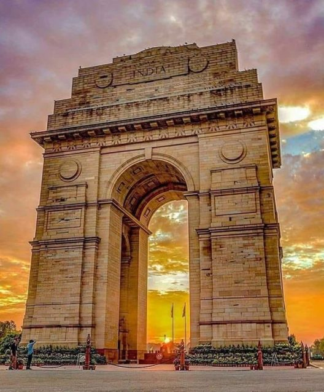

About India Gate
India Gate is a majestic war memorial located in New Delhi, India. It was built in 1931 in honor of the soldiers who sacrificed their lives in World War I. The monument is an iconic symbol of India and stands as a tribute to the country's brave soldiers.
Architecture
The architecture of India Gate is inspired by the Arc de Triomphe in Paris. It is a prominent landmark with an impressive archway and stands at a height of 42 meters. The monument is surrounded by beautifully maintained lawns and is particularly enchanting when illuminated at night.
Historical Significance
India Gate serves as a memorial for the 70,000 soldiers of the British Indian Army who lost their lives during World War I. An eternal flame, known as the Amar Jawan Jyoti, was added later to honor the soldiers who sacrificed their lives in the 1971 Indo-Pak War.
Visit India Gate
When visiting Delhi, India Gate is a must-see attraction. It holds cultural and historical significance and is a popular spot for locals and tourists alike. Check the official website for any visitor information and guidelines.